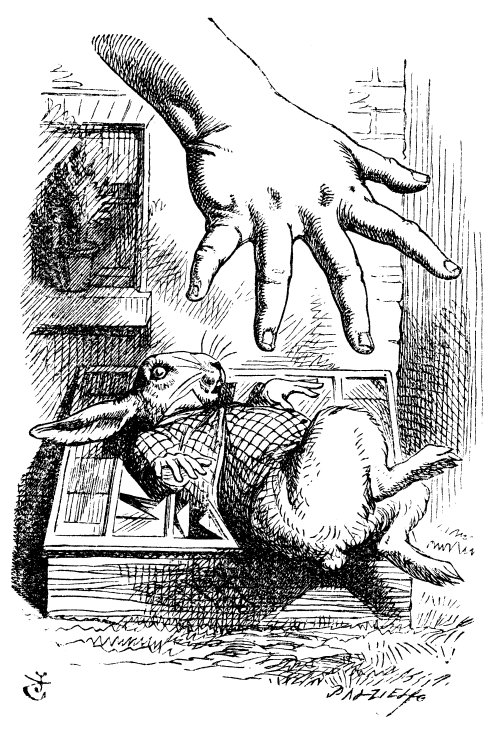

Alice in Wonderland
Home
Chapter 1
Chapter 2
Chapter 3
CHAPTER II. The Pool of Tears
'Curiouser and curiouser!' cried Alice (she was so much surprised...

Image courtesy of
Pexels
Prev: Chapter 1
Next: Chapter 3